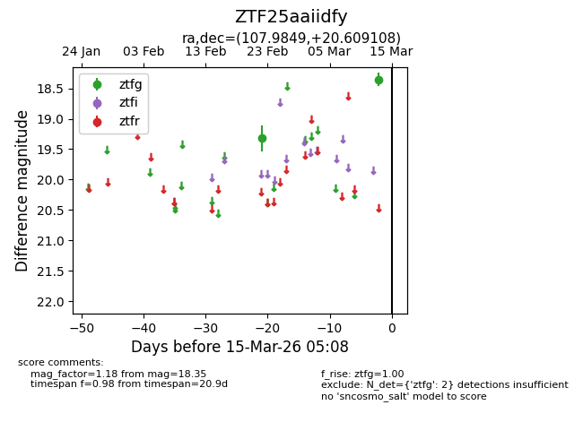
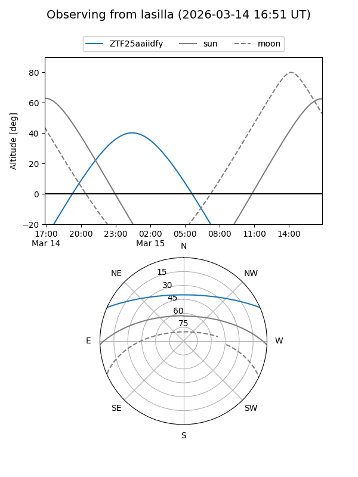
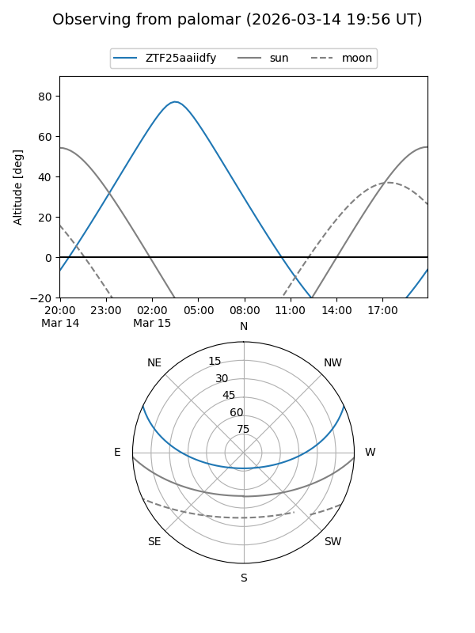

ZTF25aaiidfy
Target ZTF25aaiidfy at 2026-03-15 05:10
Aliases and brokers:
FINK: link
Lasair: link
ALeRCE: link
alt names
ZTF25aaiidfy (ztf,fink_ztf)
Coordinates:
equatorial (ra, dec) = 107.9849,+20.60911
equatorial (HMS+DMS) = 07:11:56.37,+20:36:32.79
galactic (l, b) = (196.4890,+13.58700)
Flags:
Photometry:
last ztfg=18.35
2 ztfg detections
Lightcurve

Visibility


Additional plots